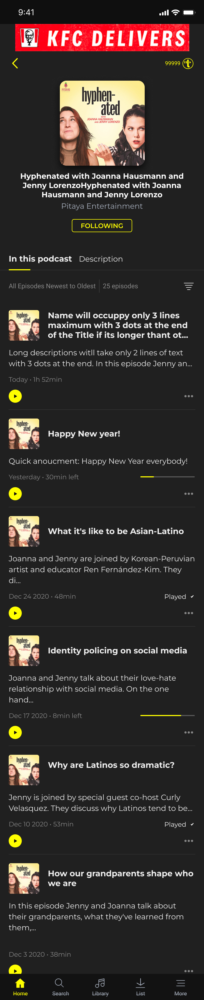
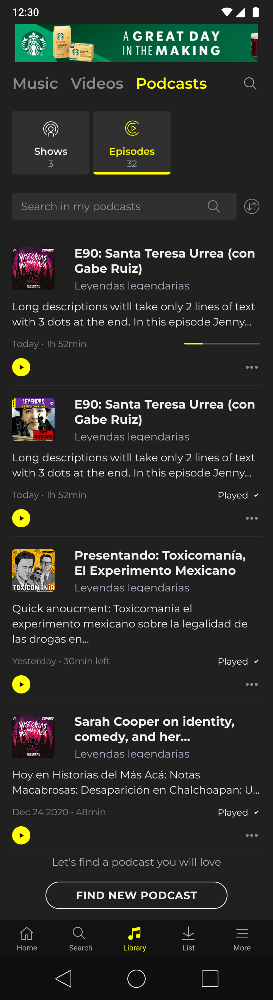
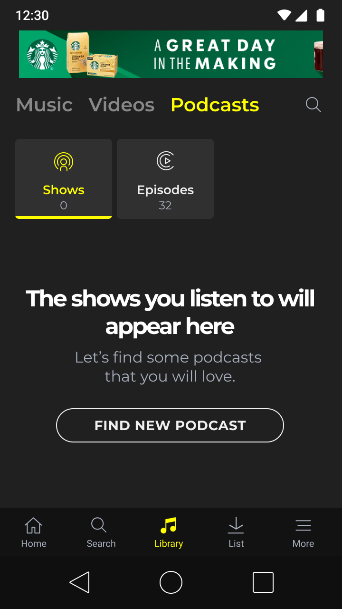
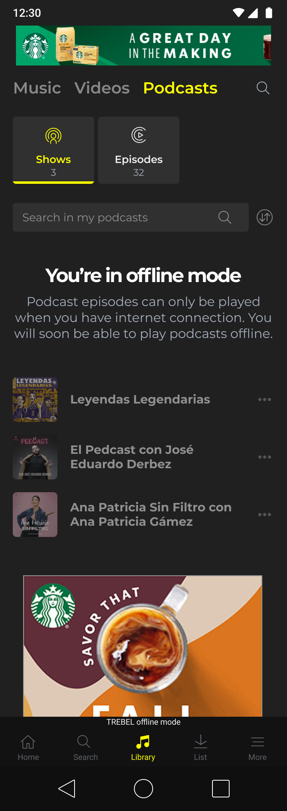
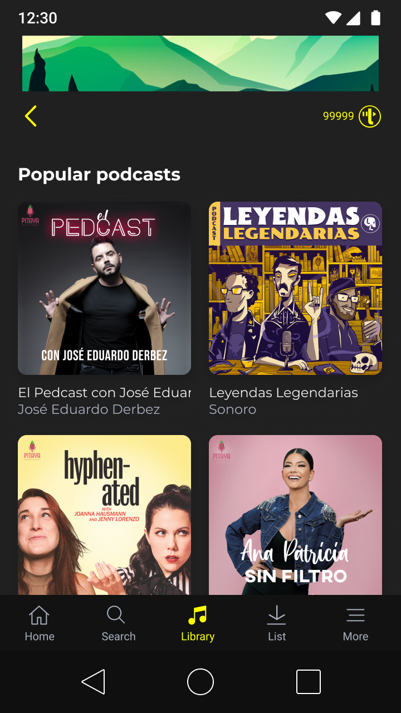

Play straight from the list
Every episode card has its own play button, so listening starts without loading a detail screen first. Fewer steps, less data.
In 2021, podcast listening was growing fast. TREBEL added podcasts to reach new audiences and open room for new products. Many of its users have entry-level Android phones, little storage and small data plans, so every screen was designed around those limits.
Screens were designed for a 360 × 640 Android viewport.
Users can judge what an action costs before they tap it.
Podcasts reuse TREBEL’s library, player and list components.


Podcasts were added to the existing Library, next to Music and Videos, so the new content type felt familiar from the first visit.
The design focused on small details that reduce steps, data use and uncertainty for listeners on low-end devices.
Usability details
Every episode card has its own play button, so listening starts without loading a detail screen first. Fewer steps, less data.
Titles stop at three lines and descriptions at two. Cards keep a predictable height, so the list is easy to scan and quick to scroll.
A progress bar and a “30min left” label let users resume where they stopped instead of streaming the episode again.
Length and date appear before playback, so users can judge time and data cost. Finished episodes are marked to avoid accidental replays.
The Follow button sends a show to My shows in the Library, next to Music and Videos.
The episode count and a “Newest to oldest” sort keep long series manageable.
A search bar inside the podcast library finds saved shows without a new catalog request.
States

Explains what will appear and links to Find New Podcast.

States clearly that episodes need a connection and that offline listening is coming, while still showing followed shows.

A two-column grid of covers lets users choose a show by its artwork, with very little reading.
Outcome
Podcasts became part of TREBEL’s library, built from existing components, designed for low-end devices and limited data, and ready for future features such as offline listening.